AI agents are not just making headlines, they are changing the way businesses create impact for their customers. In 2026, artificial intelligence is far beyond a fad. The space is moving at lightning speed and businesses from around the world are adopting AI agents to be more lean, efficient, and productive.
We’re sure that you are also intrigued about AI agents and want to know the top AI agent development platforms to build your own. In this blog, we will go through the most popular AI agent development platforms, how they function, and what you should consider before taking the plunge to implement them in your business.
Let’s get started.
What Are the Types of Agents in AI?
At this point, you’ve probably heard about the AI agents platform from social media, the news, and your colleagues. Naturally, you may also have a lot of doubts. One of the biggest questions that many business owners have is about the types of AI agents.
Because agents are not the same as chatbots like ChatGPT, Gemini, and DeepSeek. With them, you would use a single interface to do multiple tasks. AI agents are built to achieve specific goals. For instance, your team might use ChatGPT to write emails, summarize content, and create social media content. In the world of AI agents, you would create an AI agent for your sales processes. Another agent for your content creation, and so on.
This is because AI agents are specialized programs and they work best when you train them to do specific tasks. Depending on the task, you can use various techniques to fine-tune your AI agent for that particular task.
In the world of AI agents, you can categorize them into multiple types. This can be based on the methods they rely on to work, the purpose they serve, and so on. But to help you in a practical sense, let’s categorize them based on the purpose they serve and the user experience you will get. And we will also look at some examples to understand how they can help you in a real-world scenario.
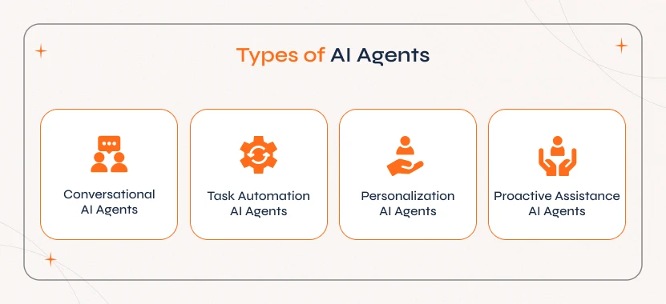
1. Conversational AI Agents
As the name suggests, conversational agents focus on handling conversations with humans. The most obvious use case can be to talk with customers. But they can prove to be very useful in a host of different scenarios.
- Chatbots: These are probably the AI agents you are most familiar with and are text-based agents. They can be added to websites, messaging platforms, and apps to handle different conversations with humans. This can be for providing instant customer support, answering questions (from customers and employees), and completing tasks like scheduling appointments.
- Voice Assistants: These agents are a step up from chatbots because users can use their voice to give inputs. Some real world examples of voice assistants would be Amazon’s Alexa, Apple’s Siri, and the Google Assistant platform. Apart from answering basic questions, these agents can perform tasks, provide detailed information, and even control smart devices using voice commands.
- Interactive Voice Response (IVR) with AI: IVR systems are not a new concept but with AI they have become much more capable. They use a technique called natural language understanding. Which basically means that they can understand normal human speech. Advanced AI-based IVR systems can help you route calls, answer complex questions, and offer personalized experiences to customers.
2. Task Automation AI Agents
These agents are like workers who operate in the background or through simple interfaces to automate repetitive, rule-based tasks. These tasks would need human worker effort, otherwise. Their goal is to improve efficiency and reduce the workload for the human workforce.
- Robotic Process Automation (RPA) with AI: The robots in this context are software that can mimic human actions. They interact with digital systems and automate various tasks. It can be tasks like data entry, processing invoices, and generating reports. AI enhances RPA because it allows the software robots to handle more complex, unstructured data, and make decisions.
- Workflow Automation Agents: These are AI automation tools that can automate your entire workflow across different systems and departments. This can be workflows like nurturing leads, fulfilling orders, and onboarding employees.
- Email Automation Agents: These AI agents can automatically sort emails, prioritize the important messages in your inbox, and even schedule follow-ups. This helps you save significant time and improves your email management.
3. Recommendations & Personalization AI Agents
These types of AI agents specialize in using user data to understand user behavior. Once they create a persona of the user, they can recommend products, services, content, or information. From the users’ side, this experience is natural like seeing tailored suggestions on their dashboards, seeing more products that interest them in ads, and so on.
- Product Recommendation Engines: These AI agents are widely used by e-commerce websites to suggest products that customers might like. They can gather data from the customers’ past purchases, browsing history, and preferences to make suggestions.
- Content Recommendation Systems: These agents can be used in media platforms and learning management systems (LMS) to suggest content. This can be articles, videos, courses, or other content based on the interest of users and their consumption patterns. Netflix recommendations are good examples of this.
- Personalized Search Agents: These AI agents refine search results based on individual user profiles. They can analyze past search history and provide results that are more relevant to the users’ needs. This makes the search experience more efficient.
4. Proactive Assistance AI Agents
Proactive AI agents work overtime to predict what the users’ needs are and provide them with assistance before they ask for it. From the users’ point of view, these can be helpful nudges, or timely reminders. And even solutions that simplify their tasks and prevent potential issues. These AI agents help businesses enhance their customer experience and achieve better satisfaction scores.
- Smart Assistants with Proactive Features: These are voice assistants or digital assistants that can proactively remind users of appointments, suggest actions based on their location or time, or provide relevant information without being explicitly asked.
- Predictive Maintenance Agents: These types of agents are widely used in industrial settings where the agents analyze sensor data to predict when equipment might fail. They take this a step further and schedule maintenance on their own so that costly downtimes can be prevented.
- Anomaly Detection Agents: These are usually multi-agent systems that can monitor data for unusual patterns or anomalies that may indicate a problem. This could be anomalies like fraud or security threats, among others. When they detect these problems, these AI agents can then actively alert users or even trigger an automated response.
Transform everyday operations with our expertise

Top AI Agent Platforms to Develop Autonomous AI Agents
Now, let’s explore the top AI agent development platforms to build your own AI agents. We are going to break them down to understand how you can use them, what their strengths and weaknesses are, and the specifics you have to keep in mind.
Top AI Agent Platforms to Build Your Own AI
1. LangChain
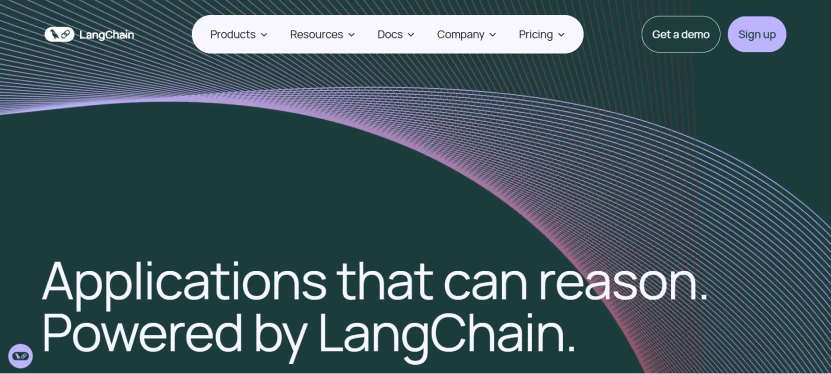
Overview LangChain is a framework that is specifically designed for building applications that use large language models (LLMs) and is open-source. It is the top open-source AI agent platform that lets you build custom agents using premade models like GPT-4, Gemini, Claude, Llama, and so on.
It provides developers with tools and abstractions to help customize, improve the accuracy, and enhance the relevance of LLM-generated information. It streamlines the development of systems that can understand the context of human language.
- LLM Interface: Provides APIs to connect and query various public and proprietary LLMs with simple code.
- Prompt Templates: It provide pre-built structures for consistently formatting queries for AI models, which improves efficiency and usability.
- Chains: It allows you to create AI workflow automation that connects different AI components for tasks like data retrieval, content generation, and translation.
- Agent: This allows developers to build complex applications where the language model decides the best sequence of actions for a query. The framework provides the necessary tools and libraries to achieve this.
- Flexibility and Customization: LangChain is highly adaptable to specific business contexts and you can build diverse applications.
- Extensive Integrations: It supports multiple data sources and language models.
- Chains: It allows you to create AI workflow automation that connects different AI components for tasks like data retrieval, content generation, and translation.
- Open-Source: It is one of the open-source AI agent platforms with a strong and active community.
- Requires Development Expertise: LangChain is primarily aimed at developers and AI agent development companies.
- Can be complex: Developers would need a deep understanding of the LangChain framework to build advanced AI agents.
2. AutoGen
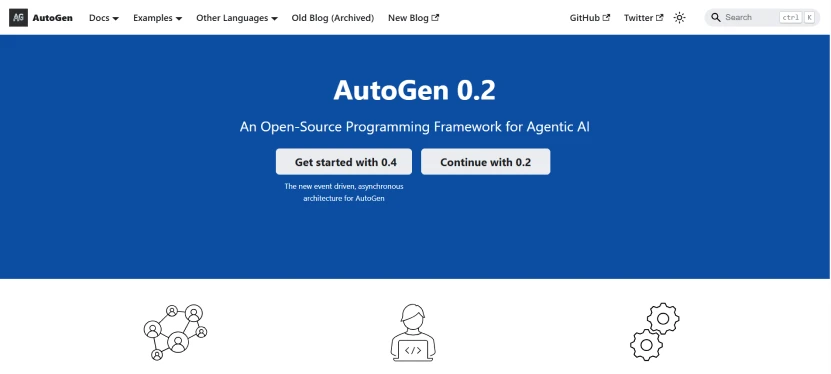
Overview
AutoGen is an open-source framework by Microsoft that focuses on collaboration between multiple AI agents to solve complex problems. These multi-agent systems have specialized capabilities to communicate and share information with one another dynamically.
- Multi-Agent Systems: This allows you to create and manage multiple AI agents that can work together.
- Agentic Orchestration: This system coordinates intelligent agents across workflows for optimized collaboration and task execution.
- Agentic Automation: This powers autonomous AI agents that can execute tasks on their own and reduces manual work for your workforce.
- Scalability: The AI agent development platform allows for workload sharing between multiple agents, which improves your performance as your demand grows.
- Improved Efficiency: AutoGen allows AI agents to specialize in different tasks, which leads to more efficient processing.
- Enhanced Problem-Solving: Collaboration between multiple AI agents helps businesses tackle complex, multi-faceted problems.
- Increased Scalability: Workloads can be distributed between multiple agents.
- Complexity in Design: It takes careful planning and configuration to design effective multi-agent systems.
- Potential for Communication Overhead: Managing communication and coordination between multiple AI decision-making systems can be a challenging task.
3. Voiceflow
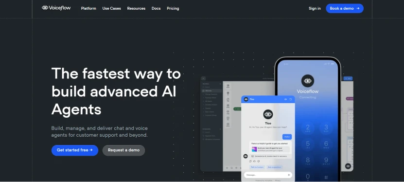
Overview
Voiceflow is one of the AI agent builders that focuses specifically on building conversational AI agents and applications. It is sought after by many businesses for building voice assistants and chatbots using a visual interface.
- Visual Builder: The AI agent development platform offers you a drag-and-drop interface for designing complex conversational flows without coding.
- Multi-Channel Deployment: The platform supports deployment of agentic AI across various platforms, which includes websites, mobile apps, voice assistants, and messaging platforms.
- Integration Capabilities: Voiceflow allows you to connect your AI agent with various APIs, databases, and third-party services to enhance functionality.
- Collaboration Features: No-code AI development platforms like Voiceflow allow your team to work together on building and managing AI agents.
- Analytics and Insights: the platform provides you with data on user interactions and helps you optimize your AI agent’s performance.
- Ease of Use: As one of the non-code AI agent development platforms, Voiceflow is accessible to non-technical users.
- Rapid Prototyping: The platform provides you with a visual interface that allows you to create and iterate your conversational workflows quickly.
- Wide Range of Integrations: You can integrate your conversational AI agent with third-party systems for enhanced features.
- Limitations in Customization: Although it is a powerful tool, the no-code nature of Voiceflow might have restrictions if you want to create highly advanced or custom AI agents.
- Pricing Structure: The AI usage is likely going to cost more as more users use your AI agent, which should be considered.
4. Botpress
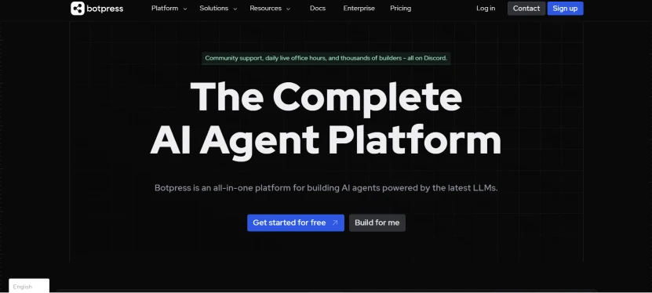
Overview
Botpress is also an open-source AI agent platform, specifically useful for building chatbots. It allows you to build chatbots and AI agents with a focus on extensibility and security. Being an open-source platform, you also get access to the codebase.
- Extensible Platform: Botpress is designed to allow you to add custom capabilities as needed through writing code and integrations.
- Enterprise-Grade Security: It provides enhanced security features that help you protect sensitive data.
- Control Over Data: The open-source nature and customizability of the platform also ensure that you get full control over your customer data.
- Natural Language Understanding (NLU): Botpress supports multiple languages. It also provides you with tools that help your chatbots and AI agents understand the intent of user inputs and respond accordingly.
- Analytics and Monitoring: The platform also gives you tools to monitor your bot’s performance and user behavior to refine performance.
- Open Source: Botpress provides you with flexibility, customization, and community support.
- Focus on Security: It is suitable for enterprises because of the data protection features it provides.
- Extensibility: It can be used to build AI agents for various business requirements using custom code.
- Technical Expertise: While the platform aims for ease of use, you will need development skills if you want to add advanced customizations and utilize the full potential of Botpress.
5. FlowiseAI
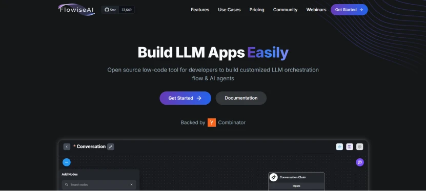
Overview
FlowiseAI is also an open-source platform for building AI agents, with the added advantage of being low-code. It allows you to create custom large language model (LLM) orchestration flows and agentic AI using a visual drag-and-drop builder.
- Visual Builder: Flowise simplifies the building of complex AI workflow automation systems without extensive coding.
- Agent and Chain System: It allows you to link various nodes like document loaders, text splitters, and LLMs to create complex AI processes.
- Pre-Built Templates and Tools: The platform gives you vector database connections and conversational QA chains, in addition to the above nodes.
- Extensive Integration: It supports solutions like Pinecone and various data types like PDFs, web pages, and CSV.
- Custom LLM Orchestration: It allows you to design customized AI solutions for various applications.
- Low-Code: This makes the process of AI agent development more accessible to even non-technical audiences. Along with the additional power of writing code.
- Flexibility and Customization: The open-source nature of Flowise means that it enables granular control over AI workflows.
- Versatile Integrations: It allows your AI agents to interact with your existing systems and diverse data sources.
- Open-Source Support: Enterprise-grade supports may not be readily available right out of the box.
- Security Considerations: If your organization has stringent security needs, then it might require additional configuration.
Expert guidance at your fingertips
6. CrewAI
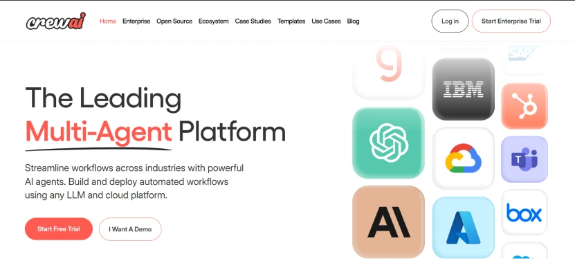
Overview
CrewAI is a very popular and open-source framework for multi-agent orchestration and is built using Python. It allows you to create autonomous AI agents that can work collaboratively as a “crew” to complete your tasks.
- Multi-Agent Collaboration: CrewAI allows you to create a team of AI agents with roles that complement one another.
- Autonomous Task Delegation: The AI agents you build with Crew can autonomously delegate tasks and coordinate with one another.
- Tool Usage: These AI agents can be configured to use existing and custom tools to complete assigned tasks.
- Language Model as Reasoning Engine: It uses LLMs to decide the best course of action for AI agents.
- Flexibility in Agent Configuration: It supports various open-source LLMs and APIs.
- Complex AI Workflow Automation: It is an ideal solution for automating multi-agent workflows that require collaboration.
- Improved Tasks Completion: It allows your AI agent systems to tackle complex tasks more effectively.
- Open-Source and Community-Driven: It has a strong community that contributes to constant updates and transparency.
- Complexity in Orchestration: Designing and managing effective multi-agent crews can be complex.
- Requires Understanding of Agentic Concepts: You would need deep knowledge of AI agent collaboration principles and task delegation to use CrewAI’s full potential.
7. OpenAI’s Operator
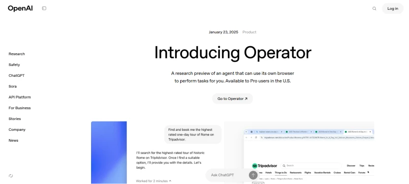
Overview
OpenAI Operator is not a standalone platform but rather refers to the capabilities you get with the OpenAI API. It allows developers to build, manage, and operate AI agents easily. It also gives you the additional advantage of being able to use OpenAI’s large language models like GPT-4.
- Access to Powerful LLMs: it provides access to OpenAI’s advanced large language models like GPT-3.5 and GPT-4 for building intelligent virtual assistants and AI agents.
- Function Calling: It allows your AI agents to interact with external tools and APIs to perform actions.
- Customization and Fine-Tuning: It also allows you to tailor the available AI model to specific business needs through fine-tuning.
- Integration Capabilities: It can be integrated with various applications and workflows through standard APIs.
- State-of-the-Art AI Models: The native access to cutting-edge language models from OpenAI’s Generative AI platforms is a big plus.
- High Flexibility and Customization: You can use APIs for building highly tailored solutions.
- Extensive Documentation and Community Support: OpenAI provides detailed resources for developers to use their platform.
- Requires Technical Expertise: This is a fully pro-code solution and you need programming skills to use APIs.
- Cost Considerations: OpenAI provides usage-based pricing, which should be on your mind if you expect heavy usage.
- Reliance on OpenAI’s API: Since this is a closed-source solution, you will have to rely on OpenAI’s services for functionality and availability
8. Vertex AI Agent Builder
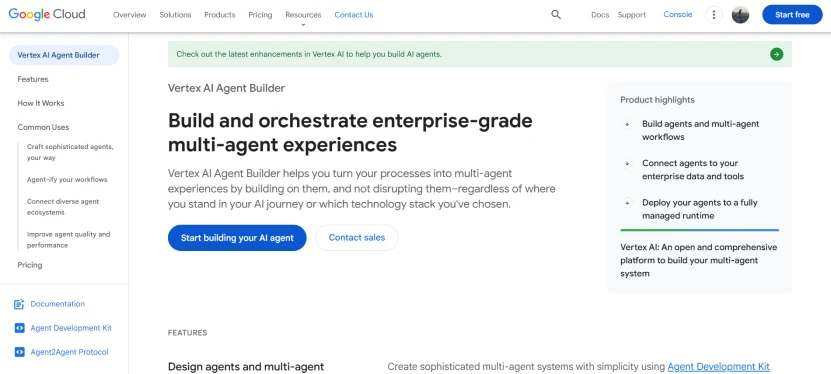
Overview
Vertex AI Agent Builder is part of Google Cloud’s Vertex AI platform. It is among the conversational AI platforms that provide you with a comprehensive suite of tools and infrastructure. You can build, launch, and manage conversational AI agents and chatbots.
- End-to-End Platform: Unlike many of the other AI agent development platforms, Vertex AI provides you with tools for the entire AI agent life cycle. From building to deploying and monitoring.
- Pre-Built Components and Templates: It includes pre-made components and templates to accelerate the development of conversational agents.
- Visual Conversation Designer: The platform provides you with a graphical interface for designing conversational flows.
- Integration with Google Cloud Services: It seamlessly works with other services within the Vertex AI suite and the Google Cloud platform.
- Scalability and Reliability: It uses Google Cloud’s robust and scalable infrastructure.
- Multi-Channel Support: it enables the deployment of AI agents across multiple channels.
- Comprehensive Platform: As one of the Top AI agent platforms, it gives you a wide range of features for building and managing AI agents.
- High Flexibility and Customization: Scalable and Reliable: Built on the enterprise-grade infrastructure provided by Google cloud.
- Integration with Google Ecosystem: Works well with other Google Cloud services.
- Can be complex: The platform requires you to have deep knowledge of artificial intelligence, agentic systems, and cloud computing.
- Cloud Dependency: Requires you to rely on Google Cloud Ecosystem.
9. Agentforce
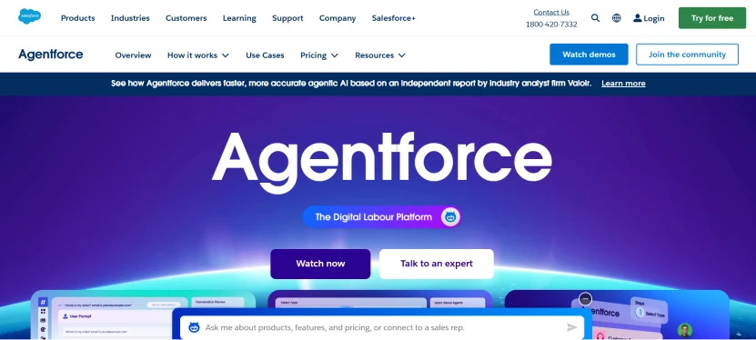
Overview
In our list of AI agent builders, Agentforce is a strong solution from the makers of Salesforce. It is an AI CRM platform specifically designed for businesses wanting to build autonomous AI agents for customer and employee support. Its focus is on embedding agentic AI into various applications, workflows, and processes within the ecosystem of Salesforce
- Embeddable AI agents: It allows you to integrate AI agents into applications through PI, Flow, Mulesoft, and native integrations with platforms like Salesforce and Slack.
- Pre-built Skills: It offers AI agent skills that are ready to use for use cases like customer service, sales development, personal shopping, and more.
- Customizable Agents: The cognitive AI agents from Agentforce are highly customizable, and can be configured from scratch using Salesforce tools.
- Autonomous Customer Engagement: The AI agents can engage customers across multiple channels 24/7 using natural human language.
- Integration with Salesforce Data: Since there is native support for Salesforce, these agents can use trusted business data within the Salesforce platform.
- Seamless Salesforce Integration: Works natively with the Salesforce ecosystem, and provides access to CRM data.
- Ease of Use: It is a low-code AI agent platform, where you can build and customize agents easily.
- Wide Range of Applications: It can be used for both customer-facing and internal support roles.
- Salesforce Ecosystem Lock-in: Since it is mainly designed for businesses that use the Salesforce platform, vendor lock-in can be a concern.
- Potential Cost: Salesforce is generally not suited for small businesses because of the high cost.
10. IBM Watson
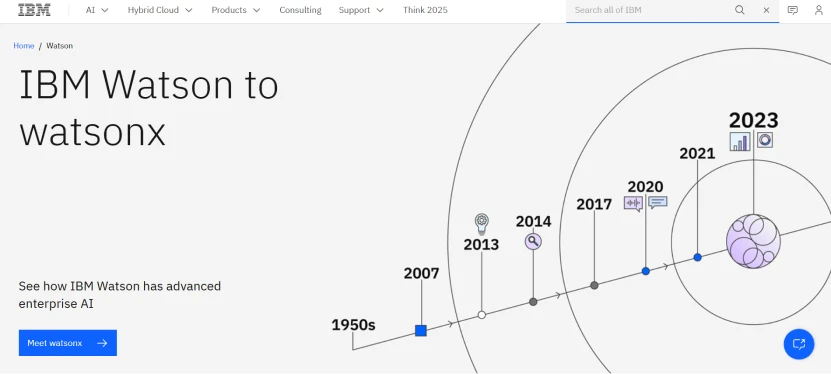
Overview
In the mix of AI agent platforms, IBM Watson is perhaps the most popular with enterprises because of its comprehensive suite of AI agent tools. Its Watsonx platform gives you the capability to create various types of AI agents for different business functions.
- Pre-built AI Agents: IBM gives you ready-to-use AI agents for your specific business functions such as procurement, customer services, and IT support.
- No-code Automation: It allows you to create custom automation with a visual interface.
- Integration with Business Tools: It seamlessly connects with popular business applications like SAP Ariba, Microsoft Outlook, Salesforce, and more.
- Support for Different Agent Architectures: It allows you to build simple reflex agents, model-based reflex agents, and goal-based agents.
- Focus on Enterprise Needs: IBM provides you with built-in solutions for compliance, risk mitigation, and efficiency gains.
- Enterprise-Ready: It is suitable for large organizations with complex needs.
- Wide Range of AI Capabilities: It gives a broad set of AI services beyond just AI agent development.
- Strong Integration Ecosystem: It connects with many commonly used business applications.
- Can be complex: Although it gives you extensive features, the learning curve can be steep.
- Higher Costs: IBM Watson being an enterprise-focus solution, can be out of reach for businesses with a smaller budget.
How to Pick the Right AI Platform for Your Business
When you are about to choose an AI agent platform, you need to look beyond the hype and focus on what really helps you run things smoothly. Here are some of the key factors you need to consider before picking one.
Real World Task Handling
Check whether the AI platform can actually perform real-time tasks that you actually need. Beyond just chat, ensure it can handle workflows, fetch data, and trigger actions without flaws.
Easy Tools Integration
The chosen AI platform should easily merge with your CRM, support tools, APIs, and databases. The smoother the integration, the faster you can get value from it.
Customization & Control
Pick a platform that actually lets you set rules, goals and boundaries. This ensures you can train your AI agents in the workflow, not just adjust to them.
Security & Data Handling
Select a platform that treats your data safely with proper user permissions and encryption. Especially, if you’re using it in a sensitive environment like healthcare and finance.
Scalability Without Compromise
If your business expands, the platform should also keep on growing. So, make sure the chosen platform supports more users, larger workloads, and more complex proces without slowing things down.
Be Ready for the Future with AI Agents with the Top AI Agent Platforms in 2026
The best AI agent platforms give businesses the power to build autonomous digital employees that can reduce costs, increase efficiency, and enhance customer experiences. Businesses in 2026 can’t fall behind in this AI race, and platforms like this democratize AI development for small and large players alike.
It is important to note that in the world of AI agents, customization is the key to success. It is not a matter of choosing the best AI agent platform out there, it is about creating your own special army of agents that best fit your needs. Hopefully, our comparison of top AI agent development platforms helps you choose the right AI agent tools to get started.
However, if you don’t want the hassle of navigating through the complexities of building AI agents, book a call with our expert.
Yokesh Sankar, COO at SparkoutTech